Archive
Selected works since 2015
Software
SNaPS Librarian
Automated pitch detection for sample libraries. Uses Spotify's Basic Pitch AI to analyze audio files and generate SNaPS-ready metadata with pitch classes.
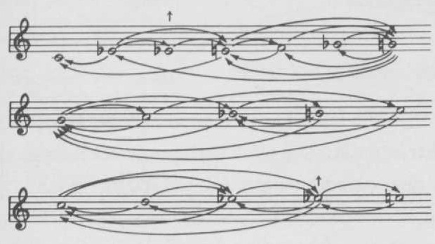
Early Downhome Blues
Interactive pitch transition network from Jeff Todd Titon's musicology research. Quarter-tone blue notes, Karplus-Strong synthesis, ensemble mode.

Pitch Class Router
MIDI bridge from Scale Navigator to pitch-class-aware plugins (Fluid Pitch, Chroma, Auto-Tune). VST3/AU plugin and web version.
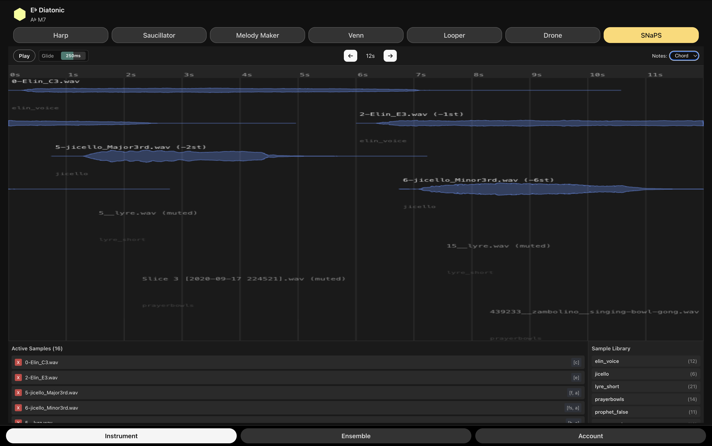
Scale Navigator Ensemble Jammer
Networked ensemble instruments synchronized via Firebase. Multiple players share harmonic state in real-time.
Scale Navigator Scale Awareness Bridge M4L Device
Max for Live device that syncs Scale Navigator to Ableton's scale awareness. Updates Ableton's global scale setting when you change scales. Push 2 integration.
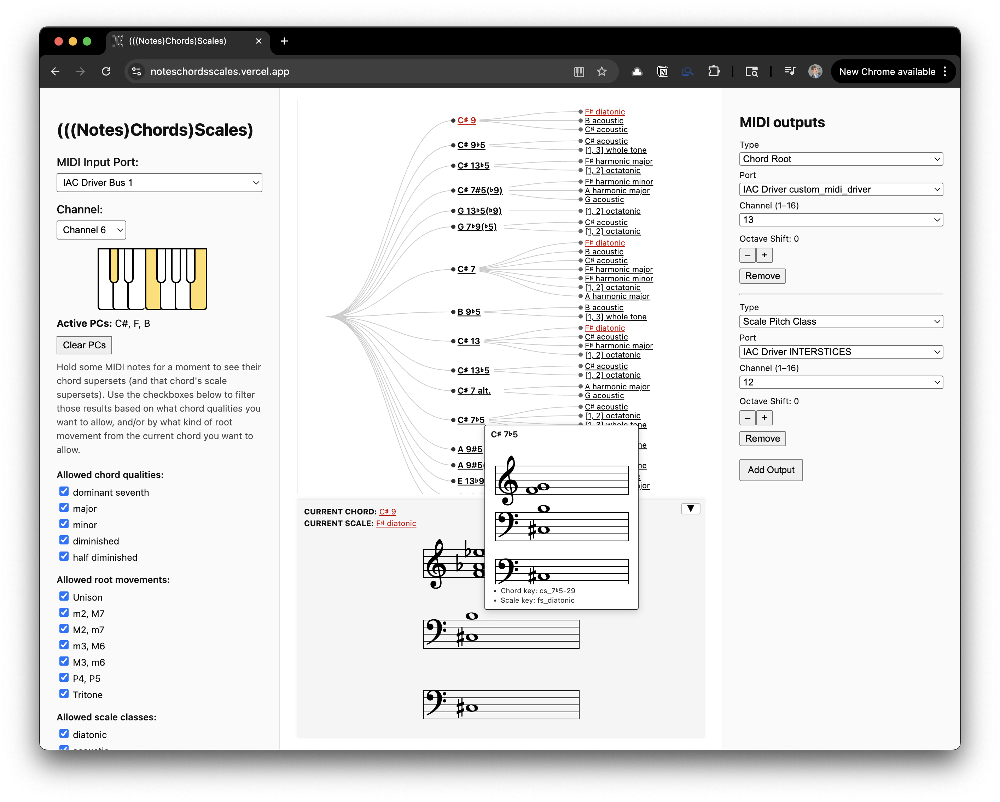
(((Notes)Chords)Scales)))
Real-time harmonic inference from MIDI input. Uses Boyd chord-ranking algorithm. Available as web app and AU plugin.
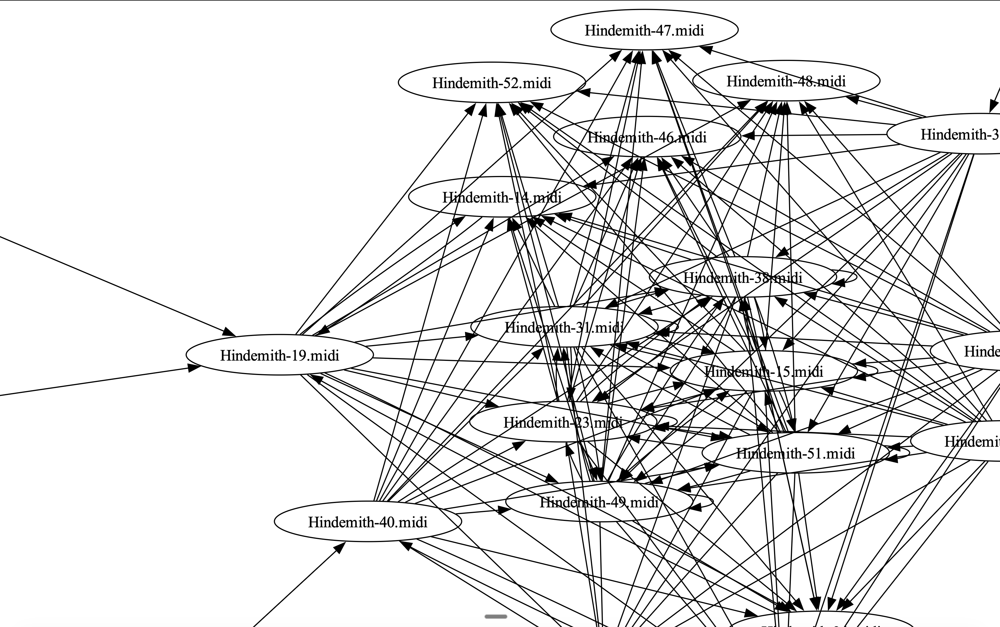
Progression Concatenator
Enter two progressions. Get seamless transition via pivot chord. Used to chain Max Reger modulations.
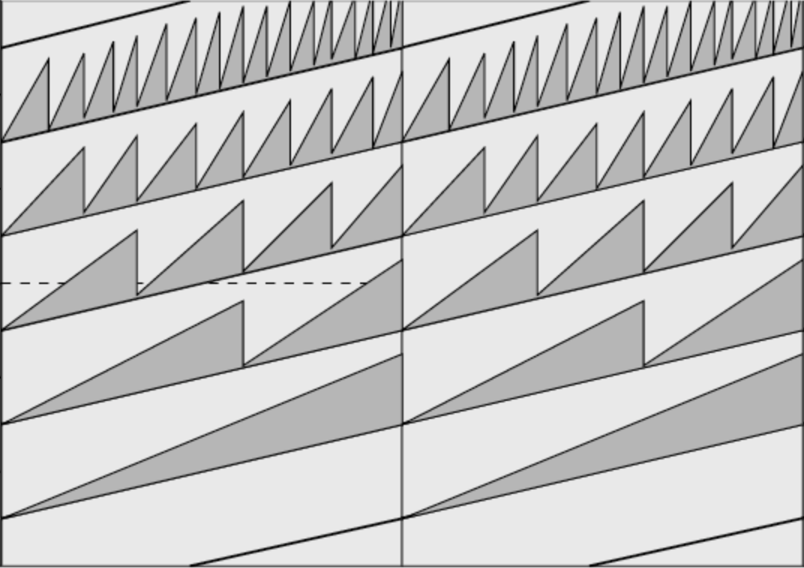
Polyrhythmic Risset Rhythm MIDI Generator
MIDI generator for Risset rhythms — the rhythmic equivalent of Shepard tones. Creates seamless endless acceleration or deceleration. Supports any polyrhythmic ratio. Python script and Max for Live MIDI Tool.
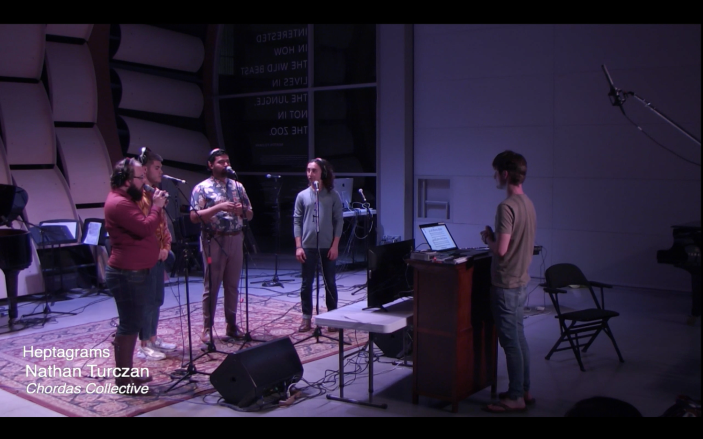
Heptagrams
Semi-improvisational piece for four singers, conductor, and MIDI-controlled player piano. Real-time score with sixteen seven-note modes from church modes to Carnatic rāgam.
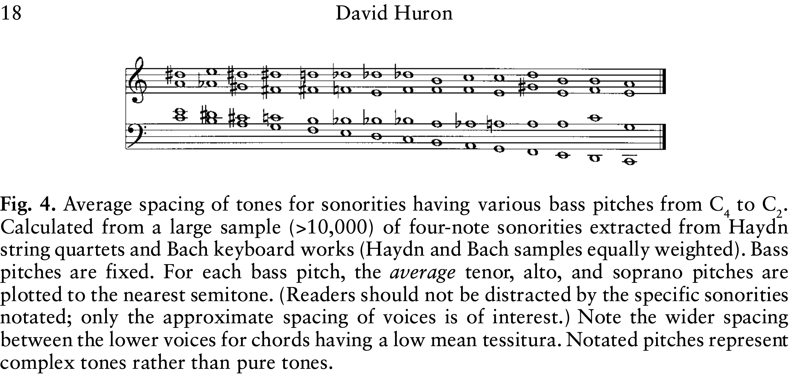
Average SATB Voiceleading M4L Device
Max for Live MIDI effect. Transforms single notes into 4-voice chords using Huron's musicological research on Bach and Haydn.
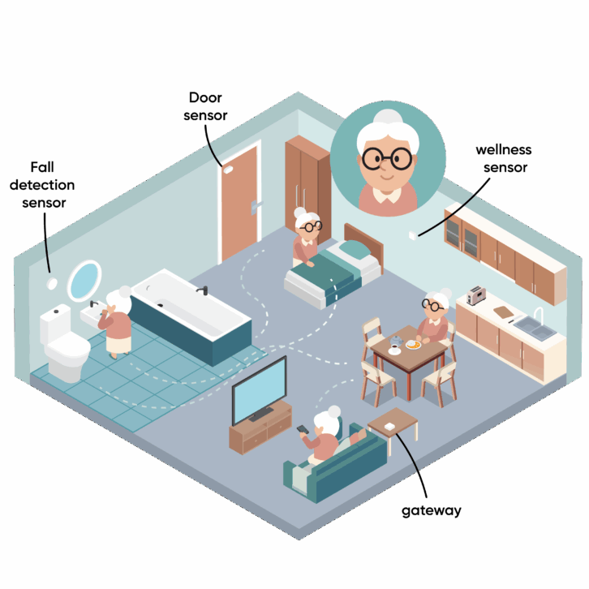
Wave of Wellness FutureCare
Agetech / smarthome app. Product Manager.
Music
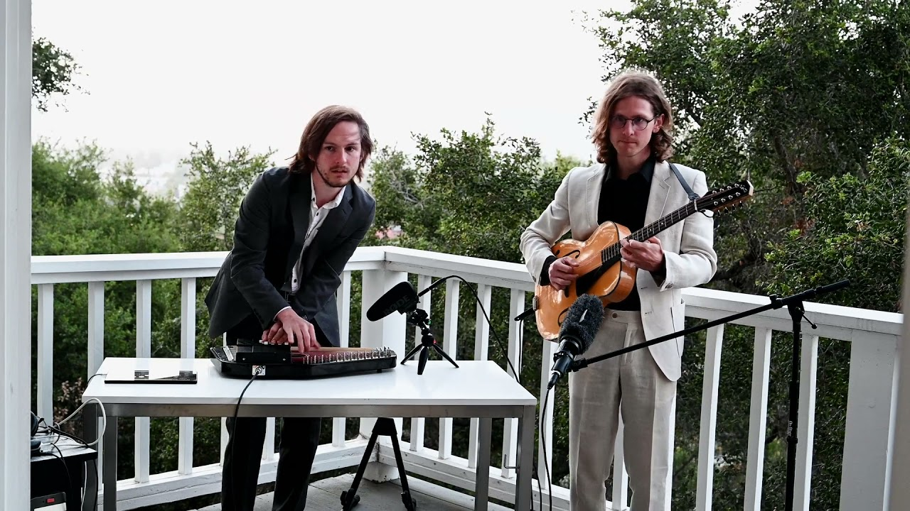


Bluegrass Abstraction
NPR Tiny Desk submission.
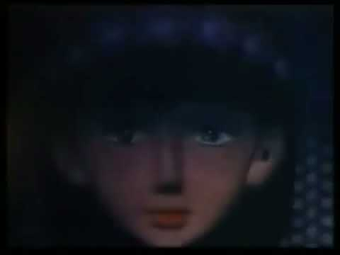
Head Wound
Film score.
Samplerate Counterpoint
Album. Contrapuntal sample rate modulation.
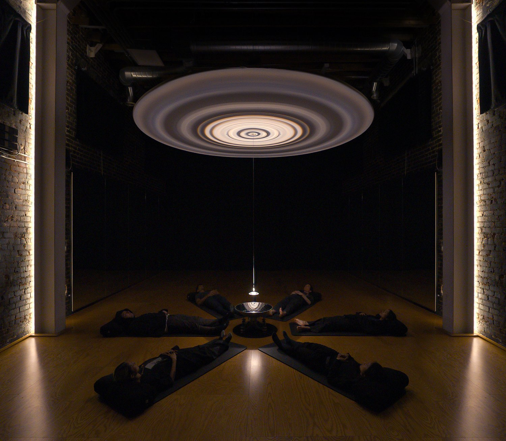
Wavespace
Music for Lachlan Turczan's immersive water-light installation. Featured at Milan Design Week 2023.
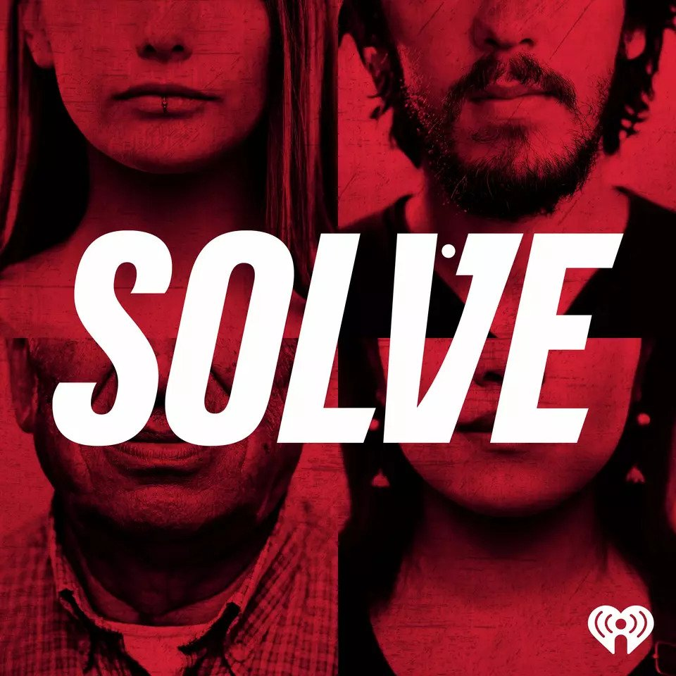
Solve Podcast
Original music for iHeartRadio scripted true crime podcast.
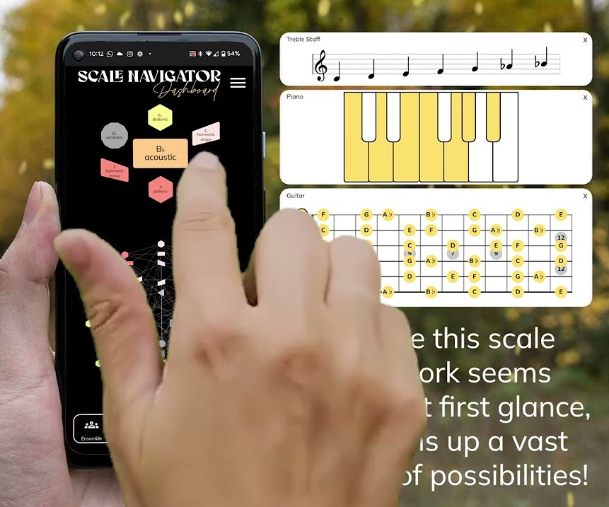
How Do You Make Music from Scales?
Demonstration of Scale Navigator via musical composition for Chinese flute.
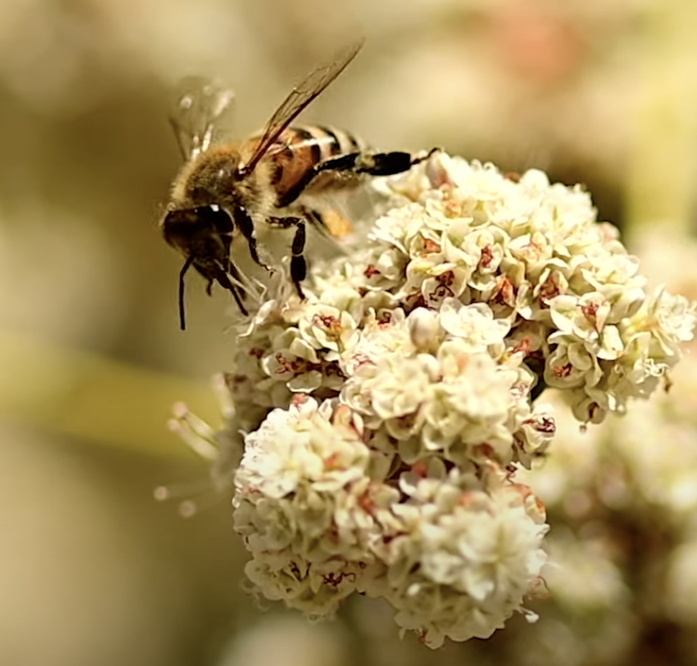
Adoration of the Flowers
Plunderphonics collage scoring Lachlan Turczan's bee video. Transposed into B major.
An Opera for Ants
Plunderphonics collage scoring another Lachlan Turczan video.
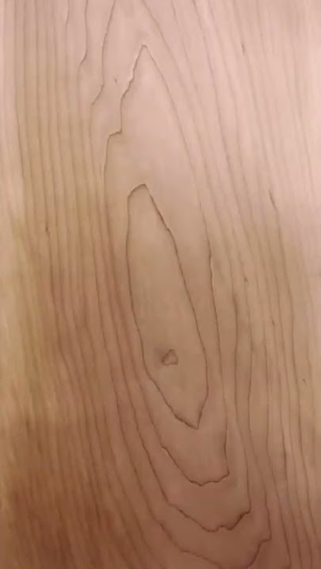
Grains
Sonifying slices of mulberry wood.
Unsettling Approach to Skincare
Horror film score.
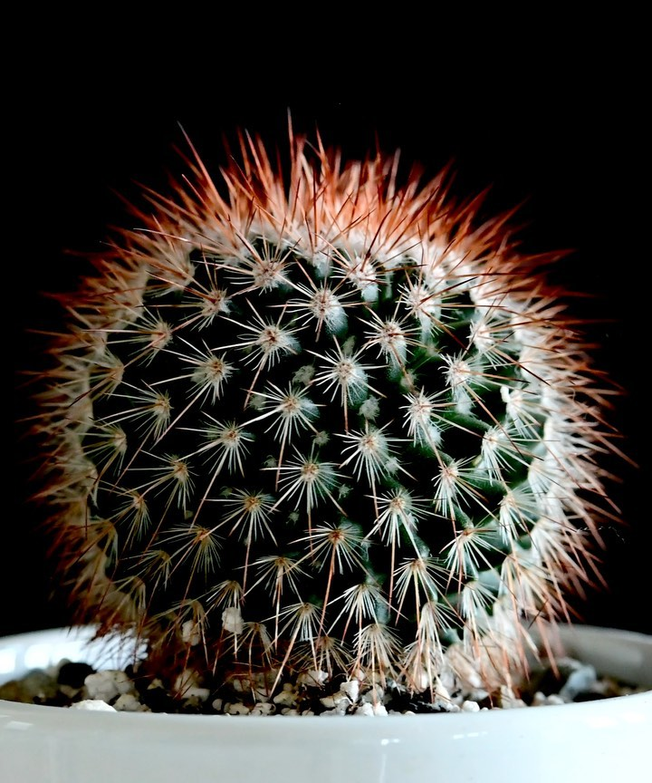
Cactus Zoetrope
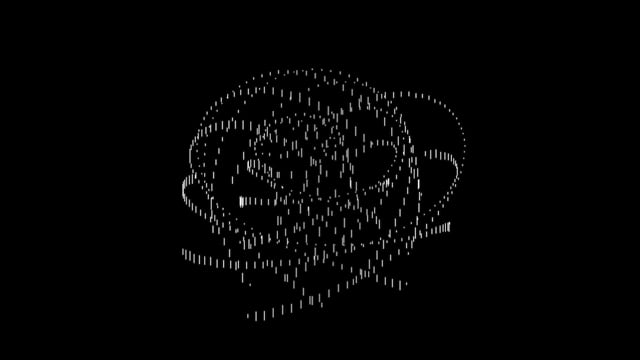
A Perfect Mess
Experimental animation presenting chaotic patterns that resolve into predetermined design. Custom software by WET (Bellagio fountains). Film by Lachlan Turczan, music by Nathan Turczan.
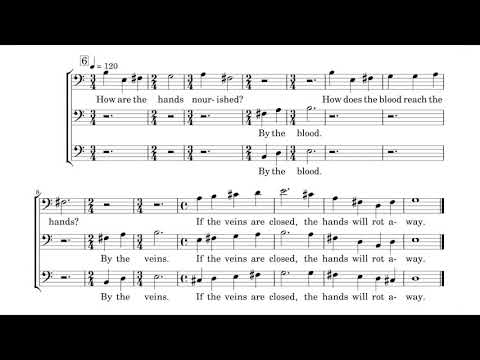
Loyal to the Group of Seventeen's Story: The Just Man
Scoring the story within a story from Gene Wolfe's Book of the New Sun: The Citadel of the Autarch.
Happy Birthday Granddad
Original song written and performed with my brothers for our grandfather's 90th birthday.